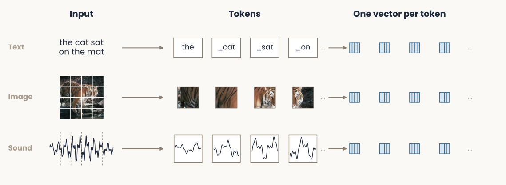
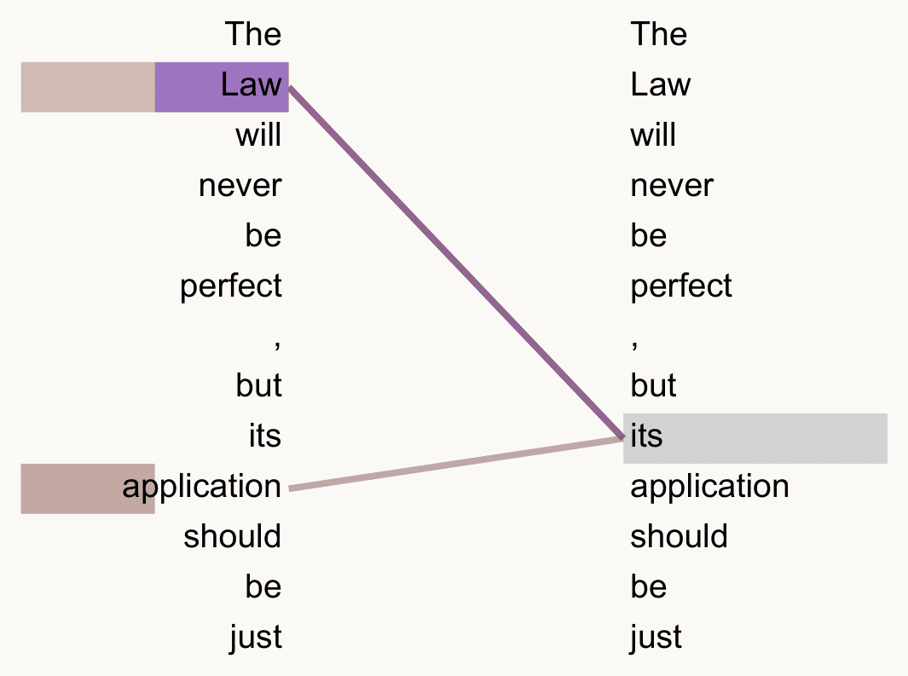
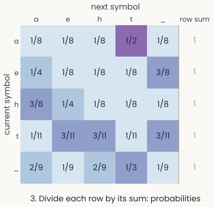
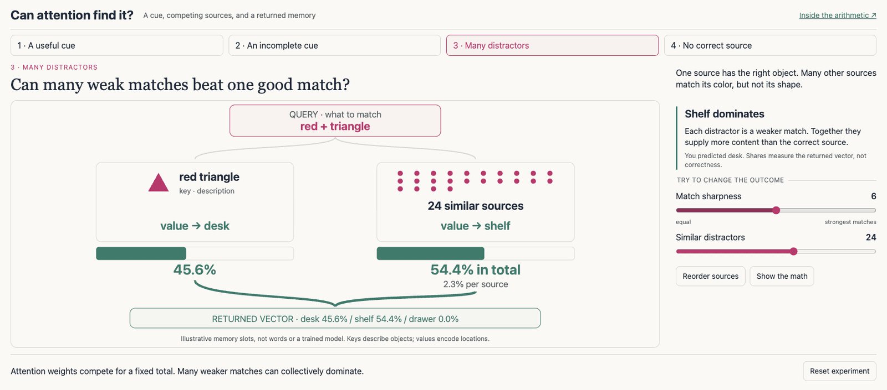
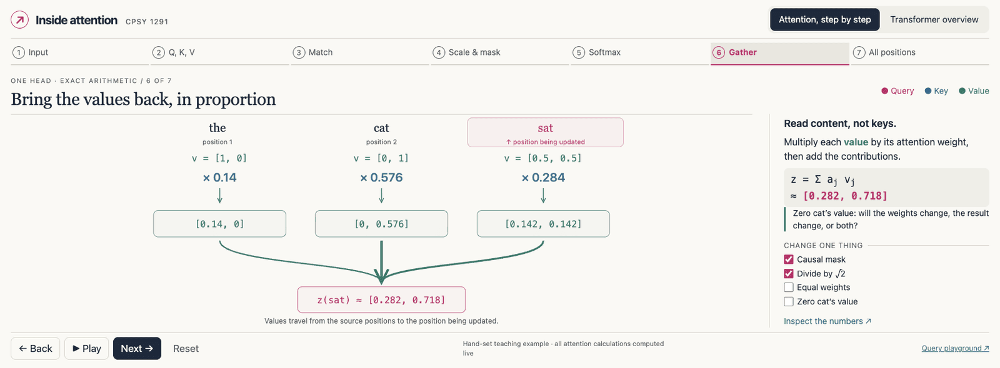
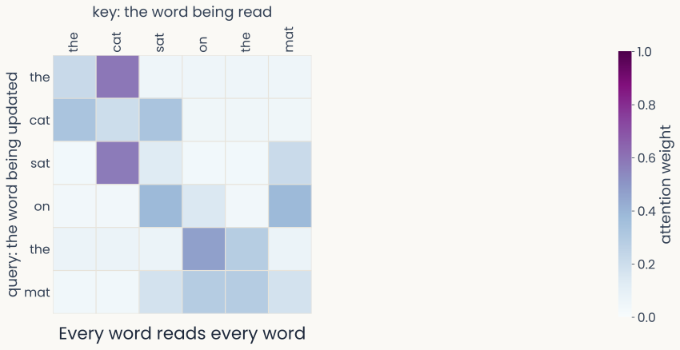
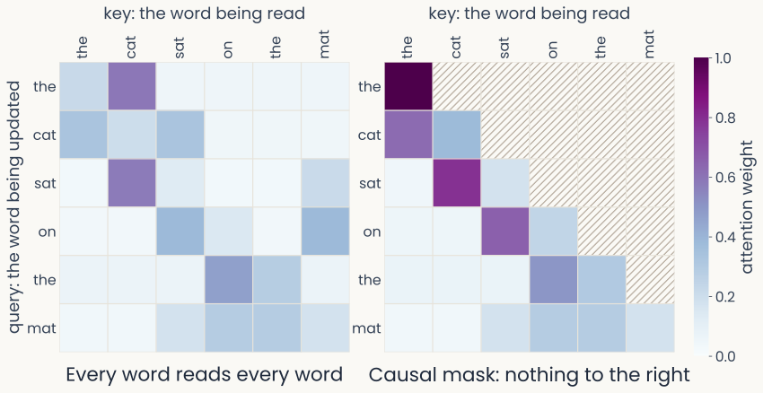

Attention
Reader-friendly version of the 39 lecture slides: the lecture content in normal flow, with figure descriptions and data tables where the figure carries data. Open the presentation.
Slide 1

Attention
Slide 2
Before 2017: one architecture per field
![Six tiles, one per field of AI before 2017, each with its own kind of network and a small drawing of it. Vision: convolutional networks, drawn as shrinking stacks of feature maps (AlexNet 2012, ResNet 2016). Language: recurrent networks, a chain of cells reading the, cat, sat, on one word at a time. Speech: deep belief nets with hidden Markov models, drawn as stacked layers. Translation: sequence-to-sequence networks, an encoder chain feeding a decoder chain. Decisions and robots: reinforcement learning, an agent and the world in a loop (DQN 2015). Proteins: hand-built pipelines of align, score and fold steps](../images/L15/fields_before.svg)
Six tiles, one per field of AI before 2017, each with its own kind of network and a small drawing of it. Vision: convolutional networks, drawn as shrinking stacks of feature maps (AlexNet 2012, ResNet 2016). Language: recurrent networks, a chain of cells reading the, cat, sat, on one word at a time. Speech: deep belief nets with hidden Markov models, drawn as stacked layers. Translation: sequence-to-sequence networks, an encoder chain feeding a decoder chain. Decisions and robots: reinforcement learning, an agent and the world in a loop (DQN 2015). Proteins: hand-built pipelines of align, score and fold steps
Open full-size figureSlide 3
Today: one architecture wins them all
![The same six tiles, now each with the same drawing: a transformer block, a small network above a highlighted attention step, repeated L times. Vision: DINOv2 and Segment Anything; images and video: Stable Diffusion 3 and Sora. Language: ChatGPT, Claude, Gemini. Speech: Whisper, speech recognition in about 100 languages. Translation: the first transformer, 2017, now done by chatbots too. Decisions and robots: Decision Transformer and RT-2, a robot's actions as tokens. Proteins: AlphaFold 2 and 3, structure from the amino-acid sequence](../images/L15/fields_today.svg)
The same six tiles, now each with the same drawing: a transformer block, a small network above a highlighted attention step, repeated L times. Vision: DINOv2 and Segment Anything; images and video: Stable Diffusion 3 and Sora. Language: ChatGPT, Claude, Gemini. Speech: Whisper, speech recognition in about 100 languages. Translation: the first transformer, 2017, now done by chatbots too. Decisions and robots: Decision Transformer and RT-2, a robot's actions as tokens. Proteins: AlphaFold 2 and 3, structure from the amino-acid sequence
Open full-size figure- All are transformers, from one paper: "Attention is all you need" (2017), cited about 200,000 times
Slide 4
Step one: everything becomes tokens

Three rows, each read from left to right: input, tokens, one vector per token. Text: the cat sat on the mat is cut into word pieces, the first four shown: the, cat, sat, on. Image: a photograph of a tiger is cut into a 4 by 4 grid of patches, and four patches are shown as tokens. Sound: a waveform is cut into short slices, four of them shown as tokens. In every row, each token becomes a small vector drawn the same way
Open full-size figure
- Each token becomes a vector. After that, the transformer does not care what a token stood for
- Today our tokens are characters; the next lecture shows how pieces of words are chosen
Slide 5
Inside a transformer
![Schematic of a transformer, read from the bottom up, with one column per token. At the bottom, six tokens, the characters t, h, e, a space drawn as an underscore, c and a. Each becomes a small blue vector, labelled embedding plus position. A grey line runs up from each vector, the token's residual stream. Inside a dashed frame marked times L blocks, a gold self-attention band spans all six columns: lines from every column fan in to the last one, so the last token reads itself and the five earlier tokens and none after it. Above it, each column has its own small box labelled MLP, the small network that works on each token alone. At the top, an output layer and softmax spans the columns and gives each column's predicted next token: h, e, space, c, a, t, the input shifted by one](../images/L15/transformer_schematic.svg)
Schematic of a transformer, read from the bottom up, with one column per token. At the bottom, six tokens, the characters t, h, e, a space drawn as an underscore, c and a. Each becomes a small blue vector, labelled embedding plus position. A grey line runs up from each vector, the token's residual stream. Inside a dashed frame marked times L blocks, a gold self-attention band spans all six columns: lines from every column fan in to the last one, so the last token reads itself and the five earlier tokens and none after it. Above it, each column has its own small box labelled MLP, the small network that works on each token alone. At the top, an output layer and softmax spans the columns and gives each column's predicted next token: h, e, space, c, a, t, the input shifted by one
Open full-size figure- Here each token is one character, as in the model you train. Read the figure from the bottom: one column per token
- Each token becomes a vector: embedding + position embedding
- blocks, each with its own weights, in two steps:
- Causal self-attention: each token reads only itself and earlier tokens
- A small network, the same for every token, works on each token alone
- The output layer predicts the next token
Slide 7
Most of a transformer is not new
| Part of a transformer | Where it comes from | |
|---|---|---|
| Embeddings: each token becomes a learned vector | Language models, 2003 | old |
| A small network at every position | The multilayer perceptron | old |
| Residual connections | ResNets, 2016 | old |
| Layer normalization | Ba, Kiros & Hinton, 2016 | old |
| Self-attention: each token reads the earlier ones | The transformer, 2017 | new |
- Old pieces: embeddings come from language models of the 2000s; the rest from the networks we have already seen, mostly CNNs
- The one new piece is self-attention
Slide 8
Self-attention at work

Two columns of the same sentence, The Law will never be perfect, but its application should be just. A thick purple line runs from its in the right column to Law in the left column, which is shaded strongly; a thinner pink line runs to application, shaded more lightly. No other word receives a line.
Open full-size figure
Published: both columns are the same sentence; its (right) reads the words on the left
- The first transformer translated English into German. Both columns are the English sentence it reads first; its tokens are words, not characters
- An attention head is one way of weighting the other words. A model runs several heads side by side: this one has 8 in each of its 6 reading blocks. Each color here is one head
- Both heads put most of their weight on Law, the noun its refers to; one also reads application
- Nobody told the model about grammar: it learned where to look from 4.5 million English–German sentence pairs
Slide 9
Why attention?
Readers predict what comes next. A model that predicts needs the right part of what came before
Slide 10
Read this
PARIS
IN THE
THE SPRING
Slide 11
Answer this
How many animals of each kind
did Moses take on the ark?
Slide 12
You read what you expect
- The triangle says Paris in the the spring. Most readers miss the second the
- It was Noah, not Moses, who took the animals. Most people answer "two" without noticing (Erickson & Mattson 1981)
- Raeding wrods with jubmled lettres is still easy, though a little slower (Rayner et al. 2006)
- Readers predict the next letters and words, and notice the surprises that break the prediction: He spread the warm bread with socks (Kutas & Hillyard 1980). A language model is trained to do the same
Slide 13
Predict what comes next
- Machines can predict too. A language model assigns probabilities to text; the ones in this lecture, like the chatbots, predict the next token from the ones before
- Our running example: the next character of TinyStories, the stories of Assignment 4 (97 possible characters)
- At position the model has read tokens , its context, and predicts token : the tokens and predicted next tokens of the transformer figure, bottom and top

Two rows of character boxes. The bottom row, in blue, is the input: t, h, e, underscore for a space, c, a, t, underscore, s, a. The top row, in green, is the target at each position: the next character, h, e, underscore, c, a, t, underscore, s, a, t. A gray arrow runs up from each input box to its target
Open full-size figure- Which of the tokens read so far should the prediction use?
Slide 14
One token at a time, or the whole window at once
One token at a time
- People read one word after another
- So do recurrent networks, a later lecture: one memory vector is carried forward, and everything read so far must fit in it. For them is a time step
The whole window at once
- A transformer gets the whole window of text at once: its context
- For a transformer, is a position in the window. Position can read every earlier position directly. A causal mask, later today, hides the later ones: they hold what it must predict
- "Earlier" means earlier in the window: all of the context is there at the same time
Slide 17
One character of context: a bigram table

A five-by-five table for the made-up toy text that hat ate the tea, rows the current symbol and columns the next, for a, e, h, t and the space, drawn as an underscore, with a row-sum column: the smoothed counts divided by their row sum, so every row holds probabilities that add up to 1: for example P(t | a) = 1/2 and P(e | t) = 3/11
Open full-size figure
A made-up toy text with five symbols: "that hat ate the tea"
- Long before transformers, the simplest model used one character of context: count how often each symbol follows each other one in the training text
- One character already says a lot: after q comes u; after a space, a new word starts
- Such tables were the standard language models for decades, in speech recognition and translation
- A pair never seen in training gets probability 0, and an infinite loss on new text. Smoothing: add 1 to every count
- Divide each row by its sum: each row now holds probabilities
Slide 18
Scoring a model: the cross-entropy
- To compare models, score them on text they never saw: at each position, look up the probability the model gave to the character that came next, and take
- Average over every position: the cross-entropy, in nats. Lower is better
| Toy text tea | Next | from the table | |
|---|---|---|---|
| after t | e | 3/11 | 1.30 |
| after e | a | 1/4 | 1.39 |
| average | 1.34 |
- The goal: predict the next token as well as possible. A model that uses more context than one character should beat the bigram table's score
Slide 19
Why not count longer contexts?
| Characters of context | Possible contexts |
|---|---|
| 1 | 97 |
| 2 | 9,409 |
| 3 | 912,673 |
| 4 | 88,529,281 |
- Each extra character multiplies the number of contexts by 97, and each context needs 97 counts, one per possible next character. Most long contexts never occur in the training text
- We need a way to use long contexts without a separate count for every possible context
Slide 20
Symbols become vectors
- Instead of a table of counts, give each token a vector that training adjusts
- The plain code is one-hot: 97 numbers, all 0 but one. Every character is then equally different from every other: the dot product of any two is 0
- An embedding table holds one learned vector per token, with numbers: for the token at position . Tokens that behave alike can end up with similar vectors: vowels, or, when tokens are words, cat and dog
- Multiplying a one-hot vector by the table picks out one row: the table is an ordinary weight matrix, and "looking up" a token is that product
- A window of tokens becomes a matrix, one row per position:
Slide 21
Position embeddings: where is each token?
- A token's embedding says what the token is, not where it sits
- Yet dog bites man and man bites dog mean different things, and the steps that come next treat their vectors the same whatever the order
- Fix: a second table, the position embedding, with one learned vector per position, added to the token's vector:
- The original transformer used fixed sine waves of different frequencies instead of a learned table
Slide 22
Look back at everything: average
Position is the -th token of the window, with vector . The simplest way to use the whole context: give position a new vector , the average of positions 1 to
| the | cat | sat | |
|---|---|---|---|
| vector (made up) | |||
| weight (equal) |
- For sat, : . But every word counts the same
- What is lost: the counts as much as cat, the word that says who sat. In a story of 500 tokens, a name read once gets a weight of 1/500
Slide 23
From the new vector to a prediction
![Schematic of the model so far, read from the bottom up, with one column per token: the characters t, h, e, a space drawn as an underscore, c and a. Each becomes a small blue vector x, embedding plus position. A gray line runs up each column. In a taupe band labelled mixing step y, lines of equal width run from every column to the last one: the average, equal weights; next, attention. Above it a bar labelled output layer W out plus softmax spans the columns. Above the last column, small green bars give the probabilities of the next character: t is the tallest, then n, r and the space](../images/L15/mixing_pipeline.svg)
Schematic of the model so far, read from the bottom up, with one column per token: the characters t, h, e, a space drawn as an underscore, c and a. Each becomes a small blue vector x, embedding plus position. A gray line runs up each column. In a taupe band labelled mixing step y, lines of equal width run from every column to the last one: the average, equal weights; next, attention. Above it a bar labelled output layer W out plus softmax spans the columns. Above the last column, small green bars give the probabilities of the next character: t is the tallest, then n, r and the space
Open full-size figure- At every position , the output layer, a weight matrix , turns into 97 scores, one per possible next character
- A softmax turns the 97 scores into probabilities; the cross-entropy trains every weight, as in the backpropagation lecture
- Only the mixing step looks at other positions. The average was one mixing step; attention, next, is a better one
Slide 24
Choose what matters: weights from similarity
- Keep the weighted sum, but let the weights depend on the tokens:
- Score each earlier position by how well it matches position , a dot product: . Two vectors match when they point the same way: in the queen said that she, she and queen share directions (a person, female), so she scores queen high and said low
- A softmax over turns the scores into weights that sum to 1:
- This is attention: positions that match count more
Slide 25
Self-attention, step by step
How does one word decide which other words to read?
Slide 26
A memory you can search
- First, attention on its own: one question, a few stored items, nothing trained
- Three objects were put away. Each has a key, its description, and a value, where it is:
| key | value |
|---|---|
| red triangle | desk |
| red circle | shelf |
| blue triangle | drawer |
- The query is the question: where is the red triangle?
- Attention scores the query against every key, turns the scores into weights with a softmax, and returns the weighted mix of the values. Which location comes back most?
Slide 27
Try it: can attention find it?

Retrieval experiment: the query red plus triangle is compared with three stored objects, a red triangle whose value is desk, a red circle whose value is shelf, and a blue triangle whose value is drawer; the returned vector is 90.9 percent desk and 4.5 percent each shelf and drawer
Open full-size figure
Slide 28
Each position plays three roles
Each position makes three vectors from its own , each with its own learned matrix:
- Query : what position is looking for
- Key : what position offers to be matched on
- Value : what position passes on when it is read
As in "Choose what matters", the new vector at position is a weighted sum with softmax weights; now it sums the values, and the weights come from how well the query matches each key:
: the number of entries in each query and key (the next slides explain the division)
Slide 29
Queries, keys and values come from the same input
- Each position's query, key and value come from its own vector, through three learned matrices. For all positions at once:
- Row of is position 's query; the same holds for keys and values
- Why three matrices: what a token looks for, what it offers to be matched on, and what it passes on can then differ. A name can be matched because it is a name, and pass on its letters
- All three come from the same , so this is self-attention. When the queries come from one sequence and the keys and values from another, it is cross-attention: German words reading the English sentence, or words reading the patches of an image
Slide 30
Scaled dot-product attention
- The same attention, , for all positions at once, as matrix products: one step that a GPU computes fast
- Scores, every query against every key: , a table with
- Divide by , where is the number of entries in each query and key: dot products of long vectors are large, and a softmax of large scores puts all the weight on one position
- Softmax along each row, then average the values with those weights:
Slide 31
Attention by hand: three words
Three tokens, here whole words: the cat sat. Update the last position, sat (). Its query is ; keys and values are made up, two numbers each, so :
| the | cat | sat | |
|---|---|---|---|
| key | |||
| score | |||
| score | |||
| weight , softmax | |||
| value |
, mostly cat's value
Slide 32
Try it: attention, step by step

Attention, step by step: the three words the, cat and sat with their queries, keys and values, and the stage of the computation shown, with the controls for the causal mask, the scaling, equal weights and cat's value
Open full-size figure
Slide 33
Try it: move the query
- The same three words as the last slide: drag the query of sat and watch the weights and the output follow
Slide 34
One sentence, one matrix of weights

A six-by-six grid of attention weights for the sentence the cat sat on the mat, rows the word being updated, columns the word being read, where every word can read every word: sat reads cat most, on reads sat and mat. The space on the right, where the masked version appears on the next slide, is empty
Open full-size figure
Schematic: hand-set scores, softmax computed · every row sums to 1
- Row = query word, column = key word, cell = weight . No mask: every word reads every word; sat reads cat most
Slide 35
The causal mask: no peeking ahead

Two six-by-six grids of attention weights for the sentence the cat sat on the mat, rows the word being updated, columns the word being read. Left, every word can read every word. Right, the causal mask: every cell above the diagonal is hatched and holds zero, so each word reads only itself and the words before it
Open full-size figure
Schematic: hand-set scores, softmax computed · every row sums to 1
- Right: the causal mask sets later words' scores to before the softmax. A next-token model uses only this one
Slide 36
Back to the bigram table
| Model | Context it uses | Held-out loss (nats) | Effective choices, |
|---|---|---|---|
| Uniform guess | none | 4.57 | 97 |
| Bigram table | the current character | 2.28 | 9.8 |
| Average | every earlier character, equal weights | 2.03 | 7.6 |
| One attention head | every earlier character, chosen weights | 1.23 | 3.4 |
- Same held-out TinyStories text for every model. Effective choices: the number of equally likely characters that would give the same loss. Each step uses the context better, and the loss falls
- The attention head is the one you build in Assignment 4, Part 1
Slide 37
Recap
- A language model predicts the next symbol from the ones before. A bigram table uses one symbol of context; longer tables explode
- Averaging the past uses all of it but weighs everything the same; attention weighs each position read so far by how well it matches what the current one looks for
- : queries, keys and values are learned projections of the same input
- The causal mask hides the future; position embeddings give order
Slide 38
Further reading for the research trail
Optional: a few research-trail entries over the semester. Any paper mentioned in any lecture qualifies, but papers from these lectures are preferred.
- Adeli et al. 2026: vision transformers predict people's reaction times when judging whether two points lie on one object
- Mehrani & Tsotsos Front Comput Sci 2023: self-attention in vision transformers is perceptual grouping, not attention
- Christian et al. 2026: where vision–language models attend, against where people look
- Barbero et al. 2025: why models attend to the first token
- Goldstein et al. Nat Hum Behav 2025: a speech model's layers match the cortical hierarchy during conversation
- Cai et al. Nature 2026: single human neurons during speech, read through a language model
Slide 39
Minute paper
Submit on Canvas → Minute papers → Minute Paper 16 (access code read out in class).
Write three brief points in your own words:
- Averaging the past weighs every earlier token the same. In your own words, how does attention let a token choose which earlier tokens to read?
- Something you do not yet understand, or a question still open
- Another idea you found interesting, and why it matters for brains, behavior or AI
Credit for a thoughtful attempt, not for being correct.